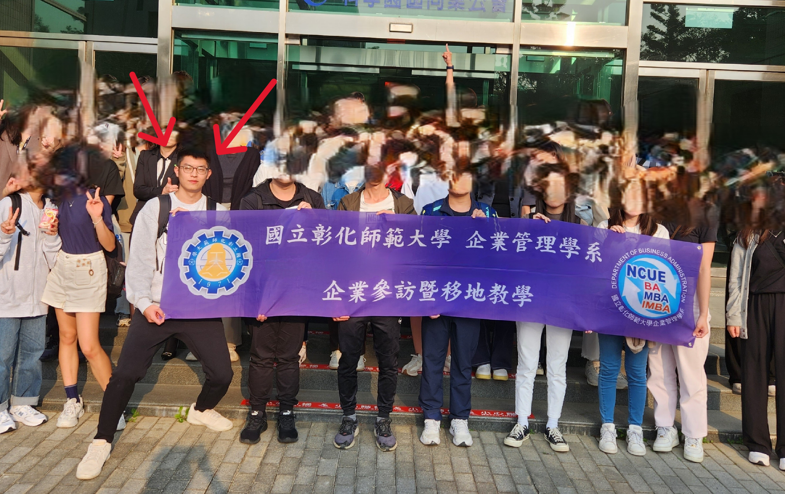
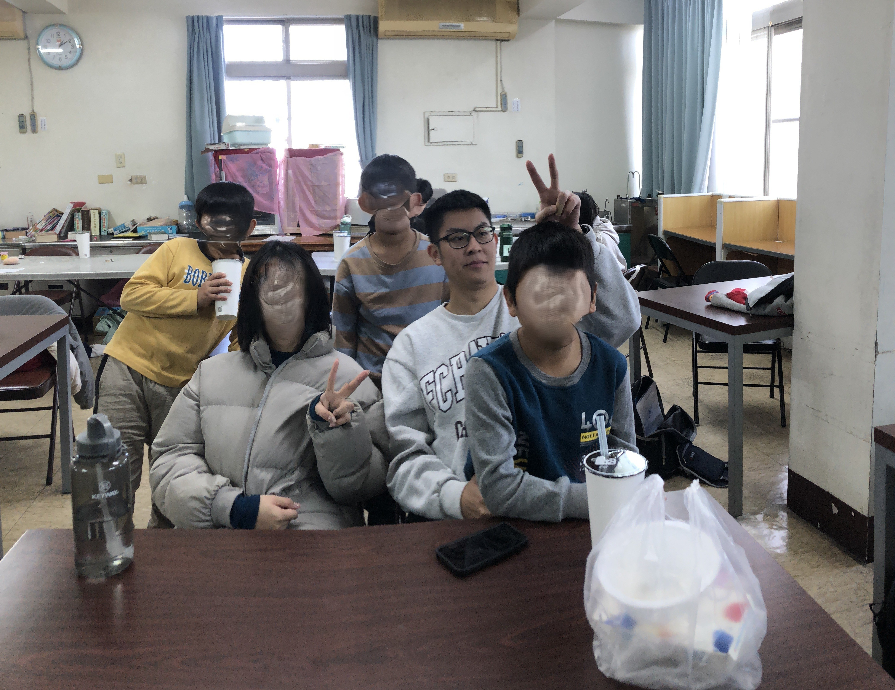
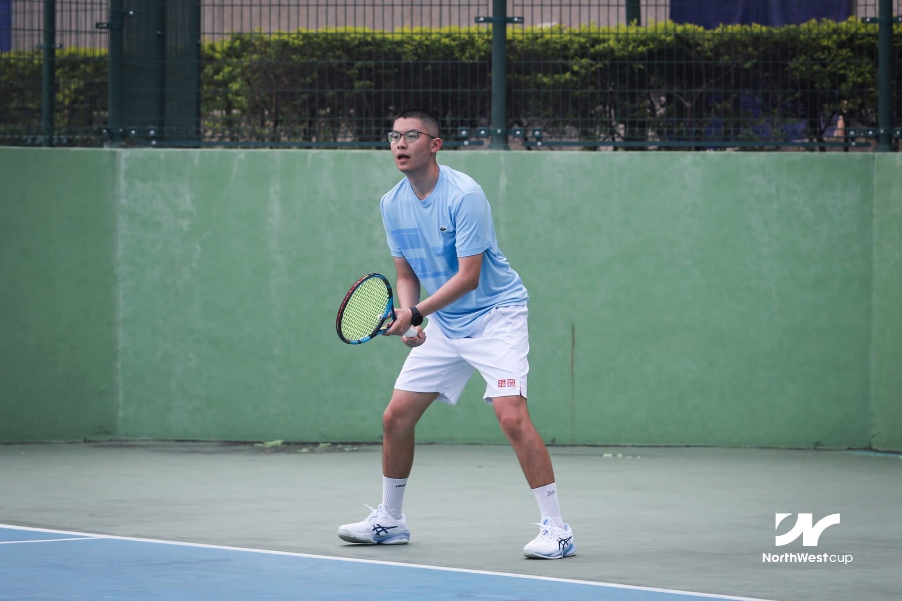

M.S. in Data Analytics Engineering @ Northeastern University
Transforming data into actionable business insights through analytics, machine learning, and storytelling.
Northeastern University
M.S. Data Analytics Engineering
Expected May 2027 · Boston, MA
GPA: 3.6/4.0
National Changhua University of Education
Bachelor of Business Administration
January 2025 · Changhua, Taiwan
I am a graduate student in Data Analytics Engineering at Northeastern University, passionate about turning complex data into clear, actionable business insights.
I specialize in machine learning, data visualization, and cross-functional storytelling to drive real-world business impact.
Scraped and cleaned 2M+ AWS, Azure, and GCP records into a 12K-row dataset, then compared the three on services, AI, GPU pricing, and 6 quarters of market share — delivered as 3 interactive Tableau dashboards.
Mapped 16 years (2000–2015) of U.S. aerospace patents across 300+ metro areas with an end-to-end pipeline and an interactive dashboard, then extended it to 38K+ patents on Google BigQuery to compare aviation vs. space.
Analyzed 22.6K+ player-week records (2021–2024, 600+ players, 32 teams) from nflverse and built Power BI + Plotly dashboards that separate volume leaders from efficiency leaders (EPA, target share).
Turned 16,000+ records across 6 socioeconomic factors into a single 0–100 livability index ranking 17 ZIP codes, visualized as interactive choropleth maps for location decisions.
Designed a normalized MySQL database (12 tables, 10+ SQL queries) for AWS purchase management, with Python and MongoDB analytics workflows on top.
Merged 3,800+ FRED records into one 2000–2025 monthly timeline and quantified the 2008 crash, COVID-19, and 2022 rate hikes — surfacing the inverse mortgage-rate vs. home-price link.
Built an EEG seizure-detection pipeline on 3,500+ feature windows, reaching 88.4% accuracy (Random Forest vs. MLP) and 85.2% on clinical CHB-MIT data.

⭐ Featured
